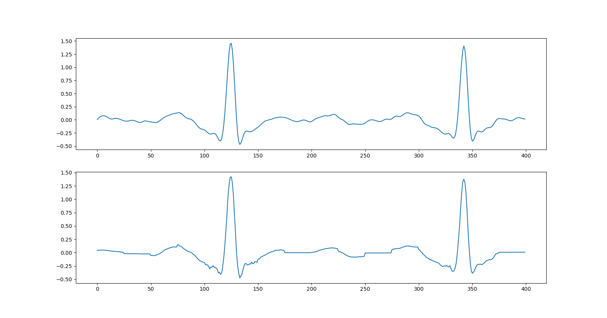

Note
Click here to download the full example code
ECG Data Compressive Sensing¶
In this example, we demonstrate the compressive sensing of ECG data and reconstruction using Block Sparse Bayesian Learning (BSBL).
# Configure JAX to work with 64-bit floating point precision.
from jax.config import config
config.update("jax_enable_x64", True)
Let’s import necessary libraries
import timeit
import jax
import numpy as np
import jax.numpy as jnp
# CR-Suite libraries
import cr.nimble as crn
import cr.nimble.dsp as crdsp
import cr.sparse.dict as crdict
import cr.sparse.plots as crplot
import cr.sparse.block.bsbl as bsbl
# Sample data
from scipy.misc import electrocardiogram
# Plotting
import matplotlib.pyplot as plt
# Miscellaneous
from scipy.signal import detrend, butter, filtfilt
Test signal¶
SciPy includes a test electrocardiogram signal which is a 5 minute long electrocardiogram (ECG), a medical recording of the electrical activity of the heart, sampled at 360 Hz.
Out:
[<matplotlib.lines.Line2D object at 0x000001FBEECFB340>]
Preprocessing¶
# Remove the linear trend from the signal
x = detrend(x)
## bandpass filter
# lower cutoff frequency
f1 = 5
# upper cutoff frequency
f2 = 40
# passband in normalized frequency
Wn = np.array([f1, f2]) * 2 / fs
# butterworth filter
fn = 3
fb, fa = butter(fn, Wn, 'bandpass')
x = filtfilt(fb,fa,x)
fig, ax = plt.subplots(figsize=(16,4))
ax.plot(t, x);
Out:
[<matplotlib.lines.Line2D object at 0x000001FBEF6C80A0>]
Compressive Sensing at 70%¶
We choose the compression ratio (M/N) to be 0.7
Out:
M=280, N=400, CR=0.7
Sensing matrix
Measurements¶
y = Phi @ x
fig, ax = plt.subplots(figsize=(16, 4))
ax.plot(y);
Out:
[<matplotlib.lines.Line2D object at 0x000001FBEF8EF100>]
Sparse Recovery with BSBL¶
options = bsbl.bsbl_bo_options(y, max_iters=20)
start = timeit.default_timer()
sol = bsbl.bsbl_bo_np_jit(Phi, y, 25, options=options)
stop = timeit.default_timer()
print(f'Reconstruction time: {stop - start:.2f} sec', )
print(sol)
Out:
Reconstruction time: 3.96 sec
iterations=20
block size=25
blocks=16, nonzero=16
r_norm=1.49e-01
x_norm=5.23e+00
lambda=5.86e-04
dmu=1.49e-04
Recovered signal
Out:
SNR: 24.79 dB, PRD: 5.8%
Plot the original and recovered signals
Out:
[<matplotlib.lines.Line2D object at 0x000001FBEF830DF0>]
Compressive Sensing at 50%¶
Let us now increase the compression
Out:
M=200, N=400, CR=0.5
Sensing matrix
Measurements¶
y = Phi @ x
fig, ax = plt.subplots(figsize=(16, 4))
ax.plot(y);
Out:
[<matplotlib.lines.Line2D object at 0x000001FBF273FE20>]
Sparse Recovery with BSBL¶
options = bsbl.bsbl_bo_options(y, max_iters=20)
start = timeit.default_timer()
sol = bsbl.bsbl_bo_np_jit(Phi, y, 25, options=options)
stop = timeit.default_timer()
print(f'Reconstruction time: {stop - start:.2f} sec', )
print(sol)
Out:
Reconstruction time: 3.82 sec
iterations=20
block size=25
blocks=16, nonzero=16
r_norm=2.43e-01
x_norm=5.13e+00
lambda=2.20e-03
dmu=2.36e-03
Recovered signal
Out:
SNR: 20.33 dB, PRD: 9.6%
Plot the original and recovered signals

Out:
[<matplotlib.lines.Line2D object at 0x000001FBF2C67AF0>]
Total running time of the script: ( 0 minutes 13.093 seconds)